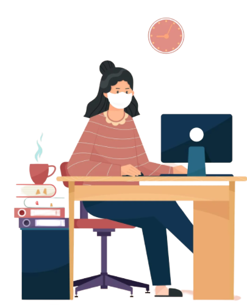
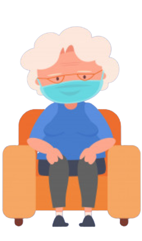

Students
As with most teaching methods, online learning also has
its own set of positives and negatives. Decoding and
understanding these positives and negatives will help
institutes in creating strategies for more efficient
delivery of the lessons, ensuring an uninterrupted learning
journey for the students.
With this sudden shift away from the classroom in many parts
of the globe, some are wondering whether the adoption of online
learning will continue to persist post-pandemic, and how such a
shift would impact the worldwide education market.
Daily Wagers and Impoverished
.png)
About 450 million or roughly 90% of India’s population works in the
unorganised economy (6). These include mostly the poor, daily wagers,
construction workers, street vendors, landless laborers, petty traders,
tailors, barbers, cycle rickshaw/auto-rickshaw/taxi/Ola/Uber drivers
and the homeless. The main source of the livelihood of these daily
wagers was severely compromised due to the lockdown, causing massive
disturbance to their livings.

Working Population
More than one in 10 people aged 16 - 25 have lost their job, and just
under six in 10 have seen their earnings fall since the coronavirus
pandemic began, new research shows. The study found young workers
to be twice as likely to have lost their jobs compared to older
employees. The self-employed and those who grew up in a poor family.
The survey, carried out by academics from the London School of
Economics and Political Science (LSE) and Exeter University, provides
further evidence that young people are suffering substantial and
sustained losses, not only to their employment, but also their
education.

Retired folks and Seniors
Older adults are at greater risk of requiring hospitalization or dying
if they are diagnosed with COVID-19. As you get older, your risk of
being hospitalized for COVID-19 increases.Everyone should take steps
to prevent getting and spreading the virus that causes COVID-19 to
protect themselves, their communities, and people who are at increased
risk of severe illness.Masks offer some protection to you and are also
meant to protect those around you, in case you are unknowingly infected
with the virus that causes COVID-19.
